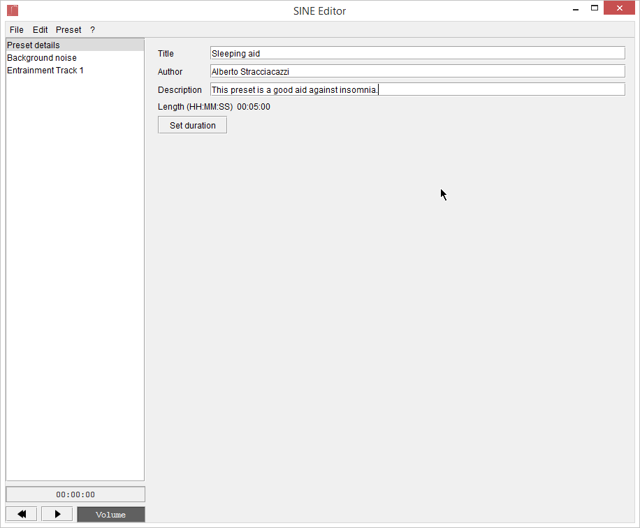
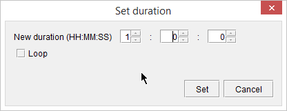
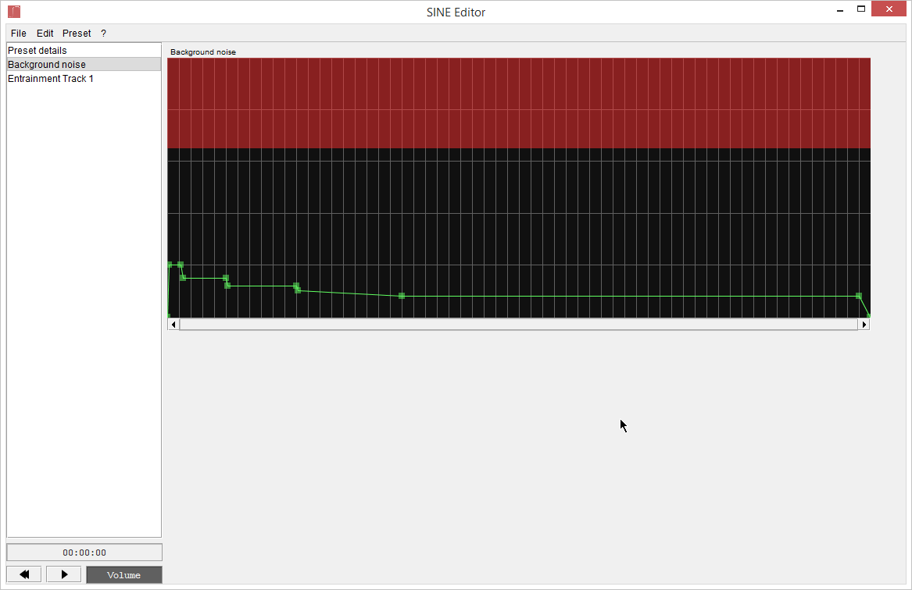
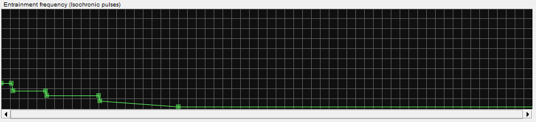
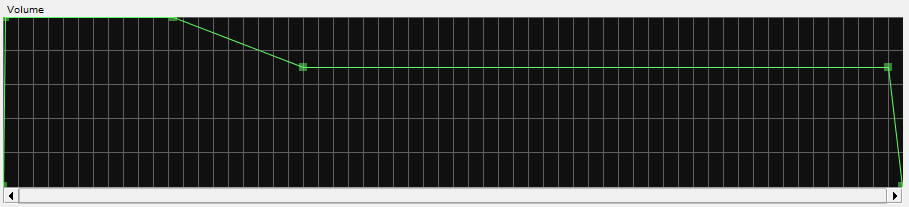
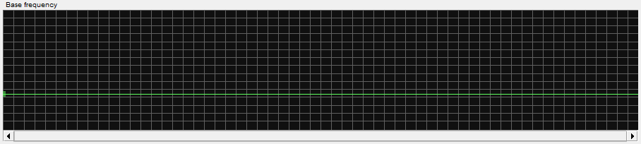
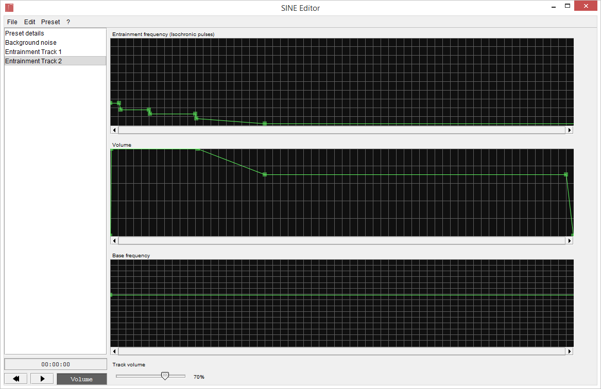
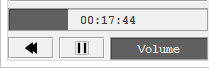

Preset creation basics
Preliminary searches
The first thing you have to do is search for the appropriate frequencies.
You can find some frequencies here, and more by googling around.
For instance, we want to make a simple sleeping aid, so our Preset has to start at 10Hz (awake and conscious) and slowly decrease to 0.5Hz (very deep sleep).
Remember not to change frequencies too quickly or too often: it takes 10-30 seconds for the brain to adapt to a new frequency.
New Preset
Open the File menu and click New, then enter the Preset details. You can change them later.

5 minutes is way too short, we must increase the length. 1 hour should be fine.

Noise
As we've already said, Background noise is very important: having too much or not enough noise can compromise the effects.
As a general rule, start with a good amount of noise, then decrease every time you want to give "emphasis" to a certain frequency.
In our case, I'd say: start with quite a lot of noise, then go down to very little noise.

As you can see, I made a short fade-in (10 seconds) and a longer fade-out (1 minute).
Remember to zoom in and out for more precision.
Entrainment Track
Finally, it's time for the actual pulses.
As we said, we'll start at 10Hz and go down to 0.5Hz with a few steps.

And now the volume. Remember to do the same fade-in and fade-out as the noise track.
As a general rule, the volume envelope is always at 100%, but for this Preset, we'll reduce the volume at the end of the Preset so it's less annoying to listen to while sleeping.

And last but not least, the Base frequency. Usually this is constant.
I suggest a frequency between 220 and 440 Hz.

If you want, you can also set the main volume of the track:
Chords and advanced functions
If you want, you can have several Entrainment Tracks in your Preset, each one of them doing (potentially) different stuff.
For instance, we will now clone our Entrainment Track, change its base frequency to 880Hz and reduce its volume down to 70% to make a simple chord.

Testing
Before you can publish your work, you must test it to make sure everything's working as expected.
Use the small player at the bottom to do this. You can also make changes while previewing.

Optimization
Because of the way LibBWEntrainment (the core library of SINE) works, the performance depend mostly on the density of points near the current time.
For instance, if there are 4 points within 10 seconds, the complexity will be higher. If the same points are, say, within 10 minutes, the complexity will be much lower.
To improve the performance of your Preset you should remove these points in excess, and make sure you never have several points overlapping (they can be spotted by the more vibrant green).
The Optimize function under the Preset menu will take care of most of these problems.
Also, if you're using multiple tracks, make sure you really need them.
Save and share
Save the Preset, and don't forget to share your work with other users of SINE.